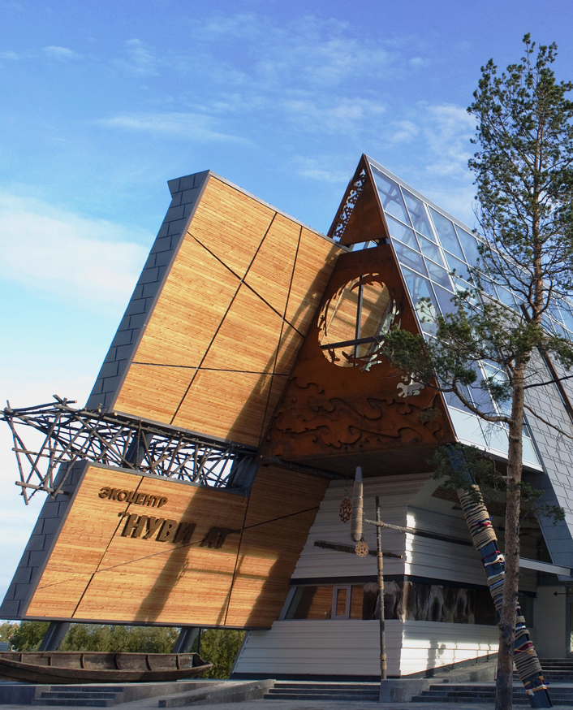
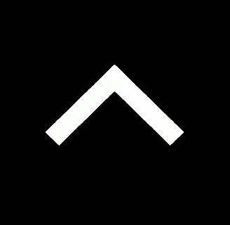

ЛИЧНЫЙ ТОП 3 СОВЕРМЕННЫХ ЗДАНИЙ РОССИИ
Бизнес-Центр «Quattro Corti» (Санкт-Петербург)

Экоцентр «Нуви ат» (Ханты-Мансийский автономный округ)
Музей-хранилище коньячного завода «Альянс 1892» (Калининградская область)

©2023-2023 :)
Контакт: +79502695414
Лого было сделано в
онлайн редакторе Favicon.by
автор Никитин Вячеслав Максимович!
и всё делал он!
сам!!!